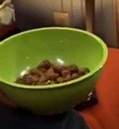

"Energy Balls": Known for being economically viable while also providing all the nutrients the body needs
An everyday food found in the Charlie Kelly cuisine
Ingredients
- Milk(1 Gallon)
- Flour(Varies based on desired consistency)
- Vitamin/s of your choosing(Multivitamin recommended for extended energy)
Recipe instructions
- Pour milk into a mixing container(a 5 gallon bucket works fine)
- Grind vitamins down and pour into mixture
- Gradually pour flour into mixture and mix enough to make a doughy consistency
- Form dough into little balls, about 1 inch diameter
- Boil balls for 30 minutes or until solid
- Enjoy extended levels of energy and peace of mind knowing you have a food storage that will last for months to come
Return to main page